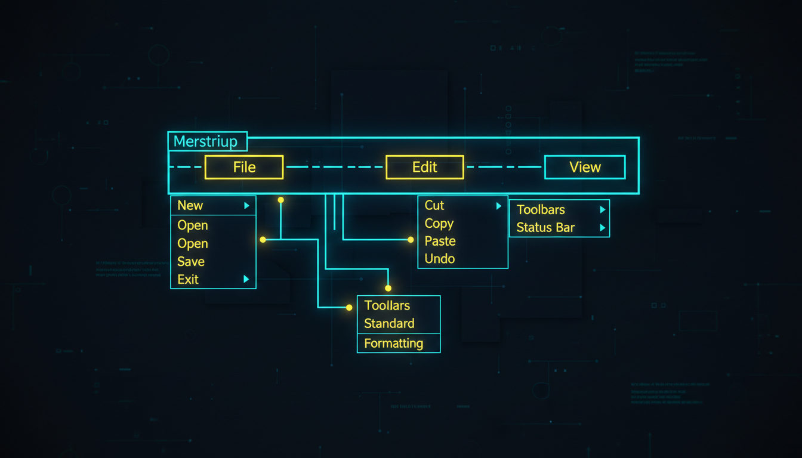

Створення меню, пункти меню, обробники

// Головне меню
MenuStrip^ menu = gcnew MenuStrip();
// Файл
ToolStripMenuItem^ mFile = gcnew ToolStripMenuItem("Файл");
ToolStripMenuItem^ miNew = gcnew ToolStripMenuItem("Новий", nullptr,
gcnew EventHandler(this, &MyForm::OnNew));
ToolStripMenuItem^ miOpen = gcnew ToolStripMenuItem("Відкрити...", nullptr,
gcnew EventHandler(this, &MyForm::OnOpen));
ToolStripMenuItem^ miSave = gcnew ToolStripMenuItem("Зберегти", nullptr,
gcnew EventHandler(this, &MyForm::OnSave));
ToolStripSeparator^ sep1 = gcnew ToolStripSeparator();
ToolStripMenuItem^ miExit = gcnew ToolStripMenuItem("Вихід", nullptr,
gcnew EventHandler(this, &MyForm::OnExit));
miNew->ShortcutKeys = Keys::Control | Keys::N;
miOpen->ShortcutKeys = Keys::Control | Keys::O;
miSave->ShortcutKeys = Keys::Control | Keys::S;
mFile->DropDownItems->Add(miNew);
mFile->DropDownItems->Add(miOpen);
mFile->DropDownItems->Add(miSave);
mFile->DropDownItems->Add(sep1);
mFile->DropDownItems->Add(miExit);
// Редагування
ToolStripMenuItem^ mEdit = gcnew ToolStripMenuItem("Редагування");
mEdit->DropDownItems->Add(gcnew ToolStripMenuItem("Копіювать",
nullptr, gcnew EventHandler(this, &MyForm::OnCopy)));
mEdit->DropDownItems->Add(gcnew ToolStripMenuItem("Вставити",
nullptr, gcnew EventHandler(this, &MyForm::OnPaste)));
menu->Items->Add(mFile);
menu->Items->Add(mEdit);
this->MainMenuStrip = menu;
this->Controls->Add(menu);